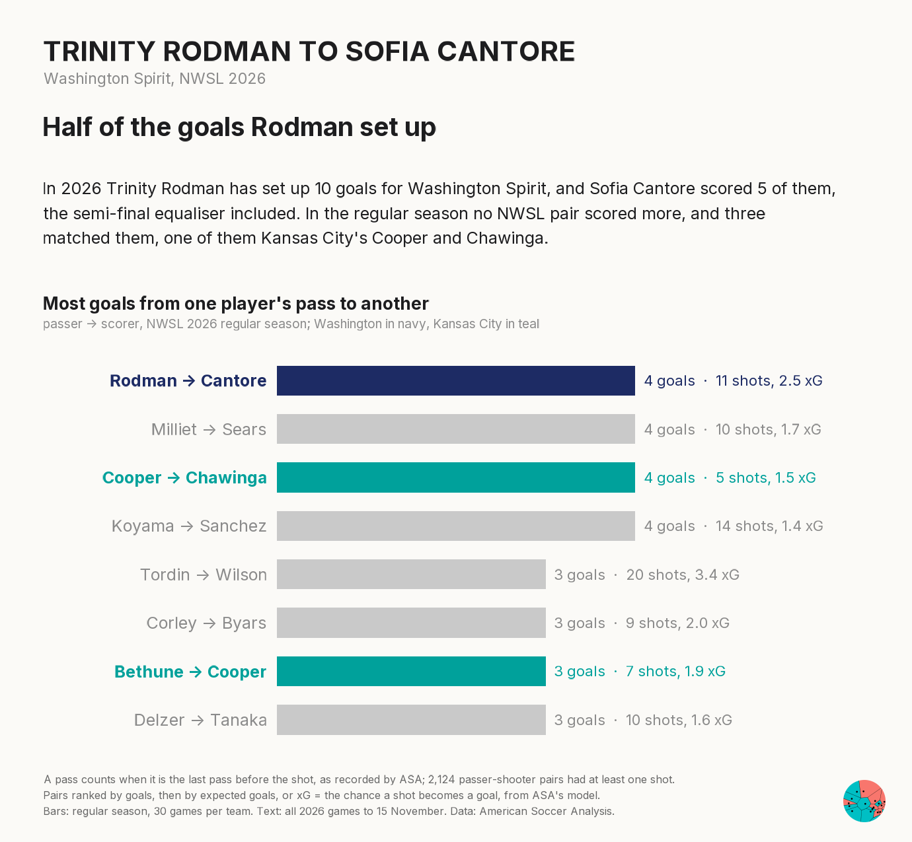
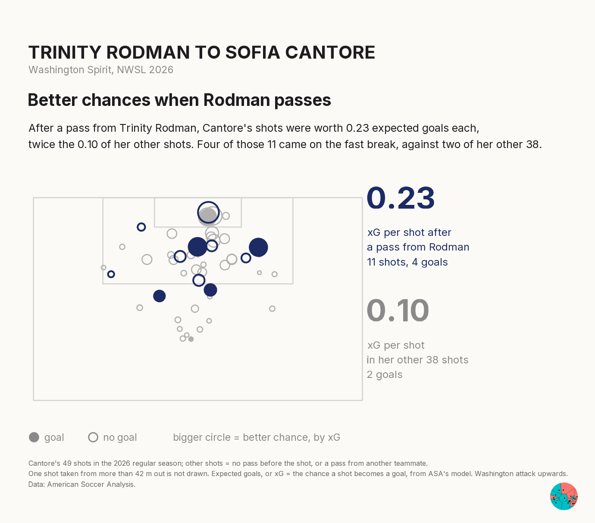

The Rodman-Cantore connection at Washington Spirit
Nº 17 · football · Nov 21, 2026
The Rodman-Cantore connection at Washington Spirit
In 2026 Rodman has set up ten Washington goals, and Cantore scored five: the most productive pair in the 2026 NWSL.
↩ back to FootballIn 2026 Trinity Rodman has set up ten goals for her Washington Spirit teammates, and Sofia Cantore scored five of them, including the equaliser in the semi-final against Utah. In the regular season no NWSL pair scored more. Three others reached four goals, among them a Kansas City Current pair, Washington’s opponents in the final.

Here a pass counts when it is the last pass before the shot, as recorded by American Soccer Analysis, a site that publishes advanced NWSL data. Expected goals, or xG, measure the quality of a shot: the probability that it becomes a goal, from an ASA model.
Rodman’s pass
In the regular season Rodman set up more shots for her teammates than any other Washington player, 35, and more for Cantore than for anyone else. A third of Cantore’s 34 shots that followed a pass came from Rodman, while among her other teammates’ shots Rodman’s share is 14%.
Better chances
In the regular season, Cantore’s shots after a Rodman pass were worth 0.23 xG each, more than twice the 0.10 xG of her other shots. The sample is small, though: eleven shots.
Part of the difference comes from the kind of attack: four of those eleven shots came on the fast break, against two of Cantore’s other 38. Three followed a through ball, while none of the 23 passes from other teammates did.

The limit of the data
Four regular-season goals are few: they came in 3 games, two of them in the first six minutes at Orlando on 2 May, and with one goal fewer the pair would drop among the 10 with three. From Rodman’s passes Cantore scored 4 goals against 2.5 expected, so part of the lead comes from shots that went in more often than their quality suggested.
In the semi-final
Against Utah, Washington fell behind in the second minute to Cloé Lacasse’s goal. In the eighth Rodman set up Cantore’s equaliser, and Clara Luvanga scored the winner in the second half.
How to read it. A pair is the player who makes the last pass before a shot and the player who shoots. Expected goals, or xG, are the probability that a shot becomes a goal: ten shots worth 0.1 xG each add up to one goal on average. The bars and the map cover the 2026 regular season, 30 games per team. Rodman’s ten goals set up cover all 2026 games up to 15 November, playoffs included.
Source: American Soccer Analysis, NWSL 2026.
Federico Ninivaggi · November 21, 2026